Settings
In Krux first menu, there is a Settings entry. Some submenu entries have too many options to fit on one screen, swipe up or down to navigate between the screens if your device has a touchscreen. Below is a breakdown of the options you can change:


Default Wallet¶
Set the default attributes for wallet loading.
Network¶
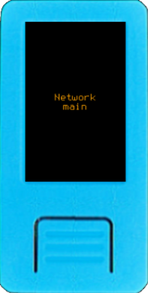

This option allows you to switch between mainnet (the default) and testnet. Testnet can be used to try out different wallet coordinators or for development.
Policy Type¶


Choose between Single-sig, Multisig, or Miniscript to avoid having to customize the policy type every time you load a key.
Script Type¶


As with Policy Type, pre-select the most commonly used script type so that you don't have to change it every time you load a wallet. Your options are Native Segwit, Neste Segwit, Taproot (Experimental), and Legacy. If you choose a script type that isn’t implemented for the selected policy type—such as a Legacy script for Miniscript—the system will default to Native Segwit.
Note: These settings do not restrict further changes to these wallet attributes, they just set their default values.
Encryption¶


Modify the encryption method and parameters to fit your needs. This will be used when storing encrypted mnemonics or creating encrypted QR codes. For more info see Krux Encrypted Mnemonics.
PBKDF2 Iter. (Iterations)¶
 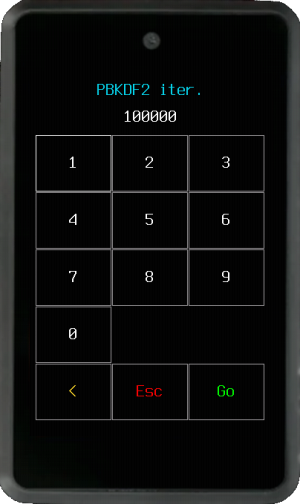
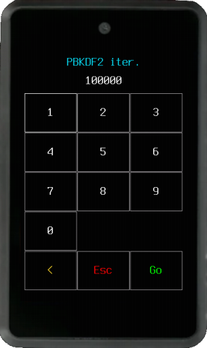
When you enter the encryption key, it is not directly used to encrypt your data. In order to protect against brute force attacks, the key is derived multiple times using hashing functions. PBKDF2 (Password-Based Key Derivation Function) iterations stands for the amount of derivations that will be performed over your key prior to encrypt/decrypt your mnemonic.
Note: Increasing this value will make the encryption harder, at the cost of taking longer to encrypt/decrypt your mnemonics. Values must be multiple of 10,000 (to save data space on QR codes).
Encryption Mode¶
 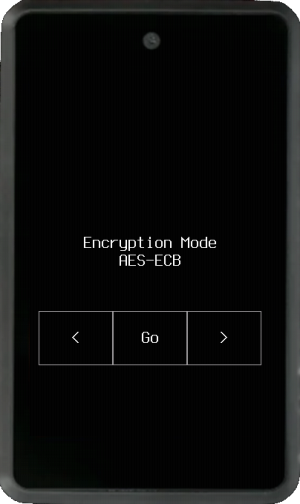
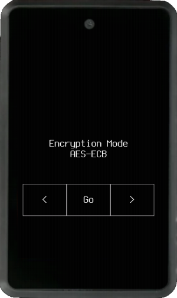
Choose between well known and widely used AES (Advanced Encryption Standard) modes:
AES-ECB¶
ECB (Electronic Codebook) is a simpler method where data blocks are encrypted individually. Compared to CBC, it will be faster and simpler to encrypt, QR codes will have a lower density and will be easier to transcribe.
AES-CBC¶
CBC (Cipher-block Chaining) is considered more secure than ECB. The first data block, an initialization vector (IV), is used to add random data to the encryption. The encryption of subsequent blocks depends on the data from previous blocks, ensuring chaining.
Encryption will take longer because a snapshot will be needed to generate the IV. This IV will be stored together with the encrypted data, making encrypted QR codes denser and harder to transcribe.
Hardware¶
 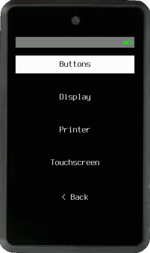
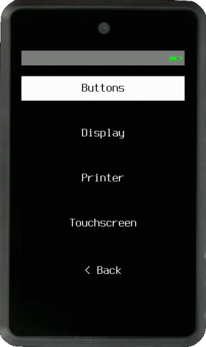
Customize the parameters available for your device and change printer settings.
Buttons¶


You can change the debounce threshold in milliseconds. With lower values, faster movements and navigation will be allowed.
The caveat is low values can cause issues, such as double click and unexpected movements, especially with lower quality buttons or encoders. If this is the case increase the value to make navigation more stable.
Display¶
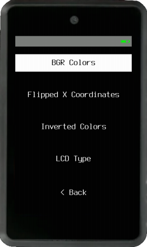
Available display settings vary based on your device’s hardware. For example, some devices will allow to change screen brightness, others don't.
Few Maix Amigo screens are different, here you can customize the BGR Colors, Flipped X Coordinates, Inverted Colors and LCD Type. For more info see Troubleshooting
Printer¶
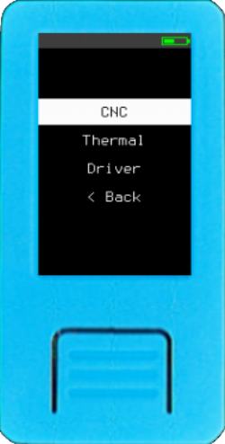

You can set up a TTL serial thermal printer or tell Krux to store a GRBL CNC instructions file on an SD card to machine QR codes.
CNC¶
Define several machining parameters according to the desired size, material you'll use, and your CNC characteristics and capabilities.
Thermal¶
Printers can come with different baudrates from the manufacturer. By default, Krux assumes the connected printer will have a baudrate of 9600. If yours is different, you can change it here.
Also setup the TX Pin you'll use (i.e., 35 on M5StickV, 7 on Maix Amigo, 8 on Yahboom, 25 on Cube, 28 on WonderMV) and tweak other parameters according to your printer recommendations. For most printers you will only need to connect 2 cables, the device TX to the printer RX and ground. Current uses of printing are listed here. Consult the parts list for supported printers.
Driver¶
Here you choose between Thermal, CNC or none (default). Leave this setting to none if you won't use a printer and don't want to be bothered by print prompts.
Touchscreen (Maix Amigo, Yahboom and WonderMV only)¶
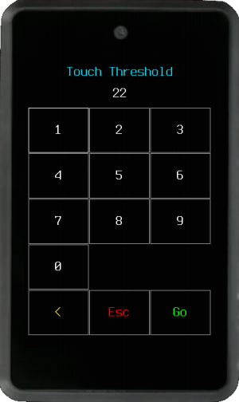
If your device has touchscreen you can change the touch detection threshold. If it is being too sensitive or detecting false or ghost touches, you should increase the threshold value, making it less sensitive. The other way is also valid, reduce the threshold to make the screen more sensitive to touches.
Tip: If your Amigo or WonderMV's touchscreen is not working properly, you can disable it by turning on the device with your finger pressing the screen. This will allow you to operate the device using buttons only.
Language - Locale¶


Here you can change Krux to your language.
Persist¶


Choose between flash (device's internal memory) or SD card for the place where your settings changes will be stored (default values are not persisted).
Security¶
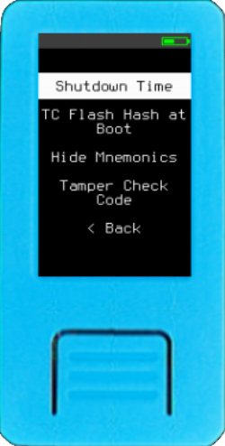

Adjust settings that may impact your security protocols.
Shutdown Time¶
Set the time it takes for Krux to automatically shut down. This feature not only conserves your device's battery, if it has one, but also serves as an important security measure. If you forget your device with private keys loaded, it will shut down automatically after the set time.
Note: Devices without batteries and power management will not shut down but reboot, which will also unload keys.
TC Flash Hash at Boot¶
Chose if you would like to run Tamper Check Flash Hash every time the device is powered on.
Activating TC Flash Hash at boot helps prevent unauthorized use by requiring the TC Code. But is important to note, unlike a PIN, the TC Code does not provide access control over USB. This means that the device's memory remains accessible via USB, allowing it to be flashed with firmware that does not require the TC Code.
Hide Mnemonics¶
When True, your device will not display private key data or backup tools when a key is loaded. It will only show public key information and allow signing operations.
Tamper Check Code¶


Create or modify a Tamper Check Code. This code will be required every time Tamper Check Flash Hash is executed.
After creating the code, you will be prompted to fill the empty memory spaces with random entropy from the camera. This step is important to make TC Flash Hash more resilient to data manipulation by eliminating empty memory spaces that could be exploited in a sophisticated tamper attempt.
The filling process requires good entropy images. If, for any reason, such as starting the process in a dark room, you fail to capture good entropy images, you can restart the filling process by resetting your TC Code.
The TC Code will be deleted if the device is wiped or user data is erased, which will consequently disable TC Flash Hash.
Appearance¶
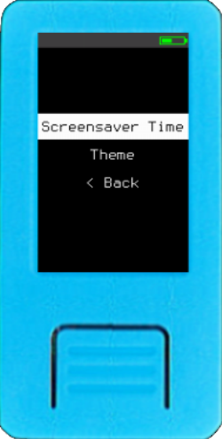

Configure screensaver time and change Krux to your desired theme.
Screensaver time¶


Set how long to wait idle before the screensaver appears. Enter 0 to disable the screensaver.
Theme¶
Choose your color theme according to your preference. Some themes may be more suitable for some devices, coordinator cameras and environments. As an example, it may be easier to scan QR codes from Krux devices using light theme in brighter environments.
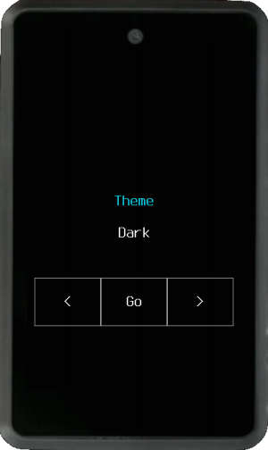


 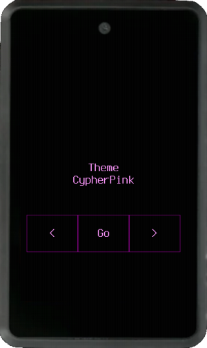
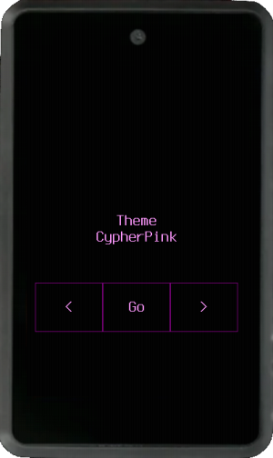
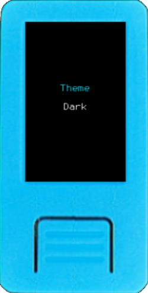
 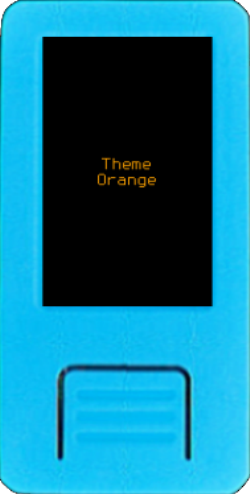
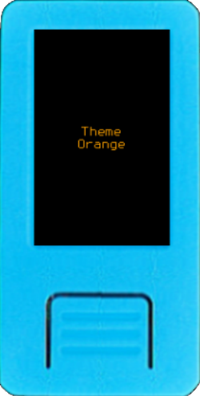


Factory Settings¶


Restore device to factory settings and reboot.